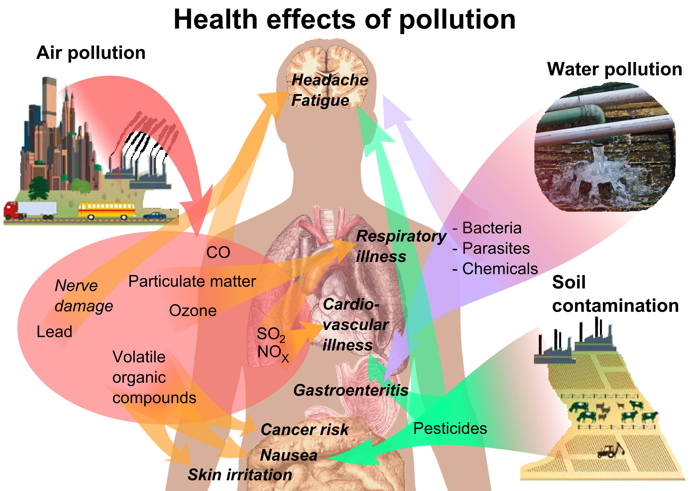

EFFECTS OF POLLUTION
Human Health
Adverse air quality can kill many organisms, including humans. Ozone pollution can cause respiratory disease, cardiovascular disease, throat inflammation, chest pain, and congestion. Water pollution causes approximately 14,000 deaths per day, mostly due to contamination of drinking water by untreated sewage in developing countries. An estimated 500 million Indians have no access to a proper toilet, Over ten million people in India fell ill with waterborne illnesses in 2013, and 1,535 people died, most of them children.[28] Nearly 500 million Chinese lack access to safe drinking water.  A 2010 analysis estimated that 1.2 million people died prematurely each year in China because of air pollution. The high smog levels China has been facing for a long time can do damage to civilians' bodies and cause different diseases. The WHO estimated in 2007 that air pollution causes half a million deaths per year in India.[32] Studies have estimated that the number of people killed annually in the United States could be over 50,000. Oil spills can cause skin irritations and rashes. Noise pollution induces hearing loss, high blood pressure, stress, and sleep disturbance. Mercury has been linked to developmental deficits in children and neurologic symptoms. Older people are majorly exposed to diseases induced by air pollution. Those with heart or lung disorders are at additional risk. Children and infants are also at serious risk. Lead and other heavy metals have been shown to cause neurological problems. Chemical and radioactive substances can cause cancer and as well as birth defects. An October 2017 study by the Lancet Commission on Pollution and Health found that global pollution, specifically toxic air, water, soils and workplaces, kills nine million people annually, which is triple the number of deaths caused by AIDS, tuberculosis and malaria combined, and 15 times higher than deaths caused by wars and other forms of human violence. The study concluded that "pollution is one of the great existential challenges of the Anthropocene era. Pollution endangers the stability of the Earth's support systems and threatens the continuing survival of human societies.
Environment
Pollution has been found to be present widely in the environment. There are a number of effects of this:
- Biomagnification describes situations where toxins (such as heavy metals) may pass through trophic levels, becoming exponentially more concentrated in the process. Global carbon dioxide emissions by jurisdiction (as of 2015)
- Carbon dioxide emissions cause ocean acidification, the ongoing decrease in the pH of the Earth's oceans as CO2 becomes dissolved.
- The emission of greenhouse gases leads to global warming which affects ecosystems in many ways.
- Invasive species can outcompete native species and reduce biodiversity. Invasive plants can contribute debris and biomolecules (allelopathy) that can alter soil and chemical compositions of an environment, often reducing native species competitiveness.
- Nitrogen oxides are removed from the air by rain and fertilise land which can change the species composition of ecosystems.
- Smog and haze can reduce the amount of sunlight received by plants to carry out photosynthesis and leads to the production of tropospheric ozone which damages plants.
- Soil can become infertile and unsuitable for plants. This will affect other organisms in the food web.
- Sulfur dioxide and nitrogen oxides can cause acid rain which lowers the pH value of soil
- Organic pollution of watercourses can deplete oxygen levels and reduce species diversity.